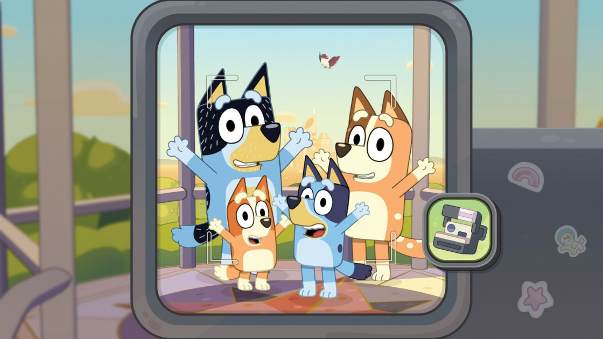

01
《Bluey’s Happy Snaps》以 SDF 平面角色與 Control Rig 重現手繪動畫
Gameloft Brisbane 把角色拆成朝向攝影機的分層二維平面，以 SDF 貼圖、Unreal Engine Control Rig、八方向資產和自訂外框 Shader，在可自由探索的三維場景中維持原作造型。

Unreal ★★★★☆
完整分析
角色資產技術流程
角色先在 Maya 建立平面、骨架與 SDF 身體部件，再匯入 Unreal Engine 設定材質、色彩曲線和 Control Rig；眼睛則由 SDF 貝茲曲線 Shader 控制眨眼與視線。
八方向動畫製作影響
團隊為每名角色製作八個相隔四十五度的朝向，主要在一個角度完成動畫後複製到其餘方向再清理，並用 Shader 插值減少切換角度時的跳動。
鏡頭與效能限制
俯仰鏡頭會暴露角色由平面組成，手持拍立得還需額外壓平圖層；外框 Shader 與複雜 Rig 對低階平台負擔最大，因此以 LOD 和貼圖壓縮換回效能。
BRIEF｜來源已驗證；證據深度較有限，完整分析會明確區分已知資訊與待驗證事項。